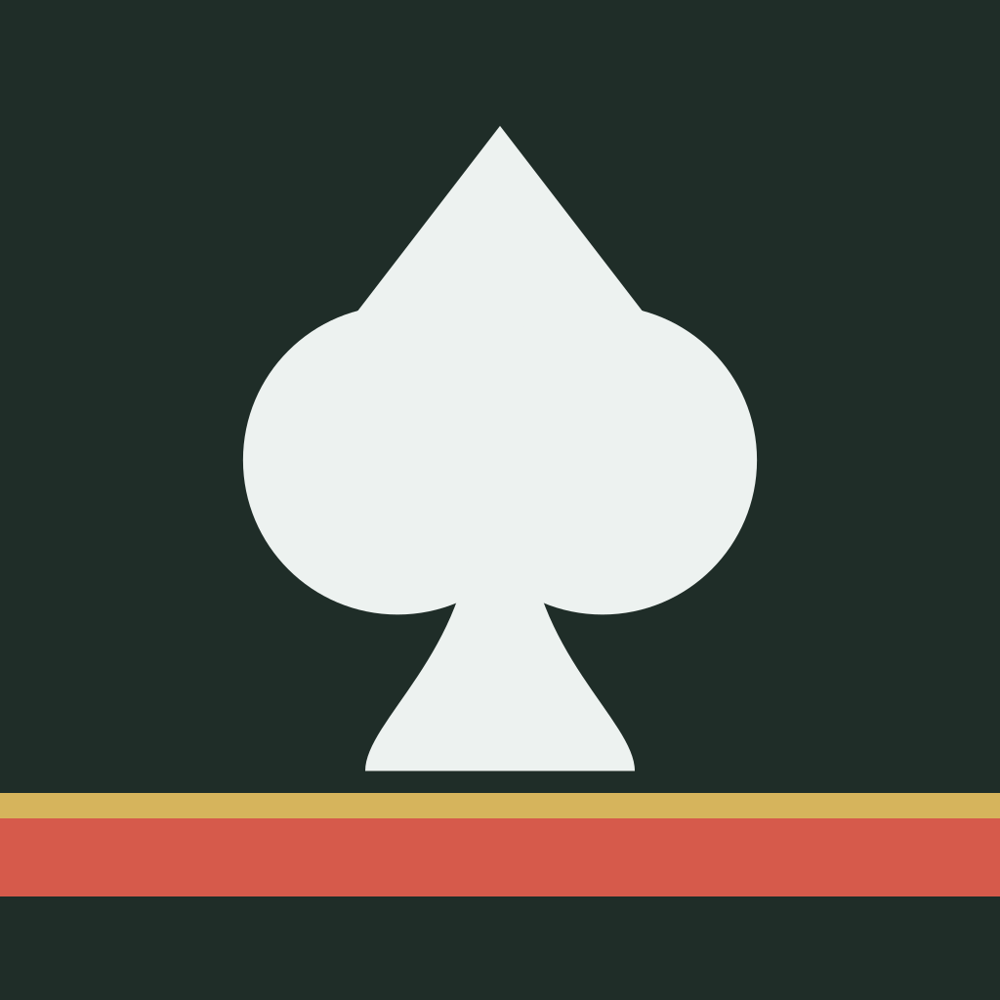
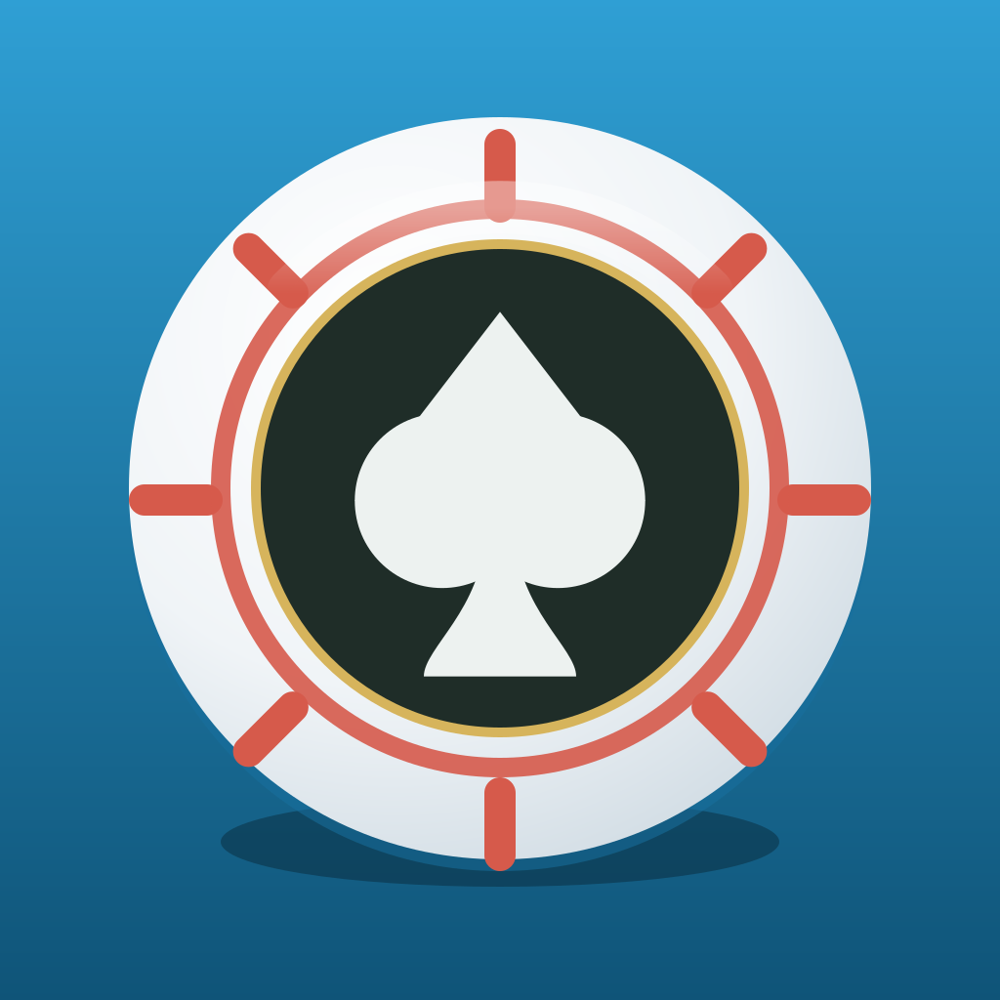
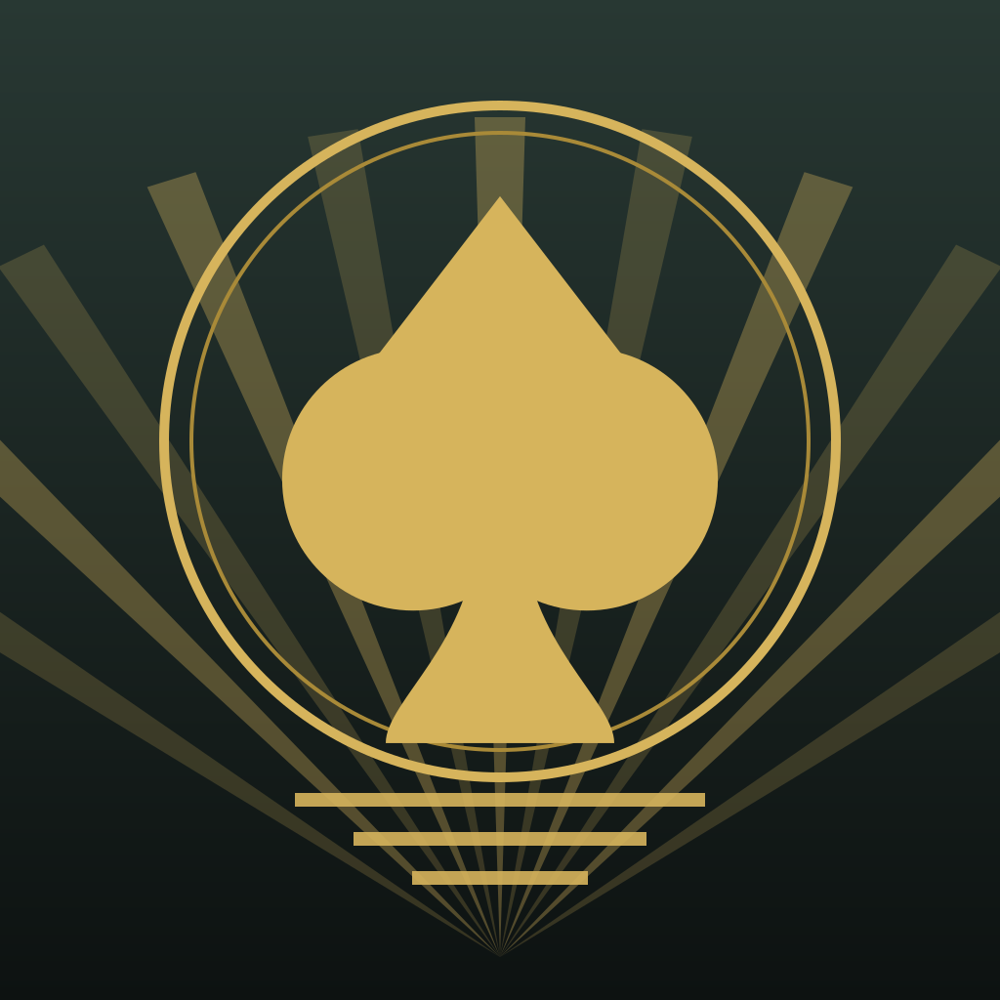
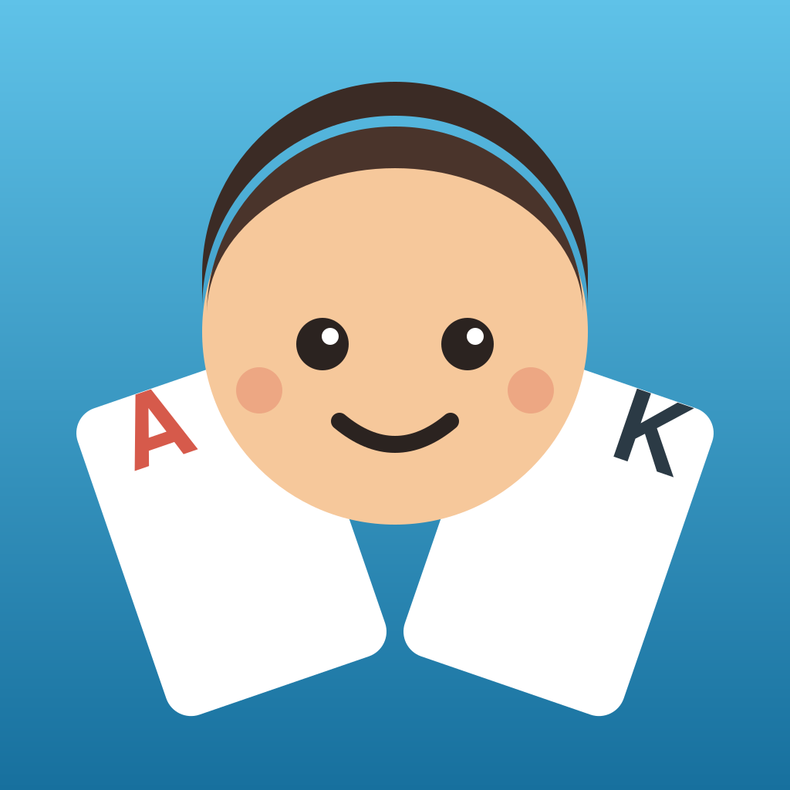
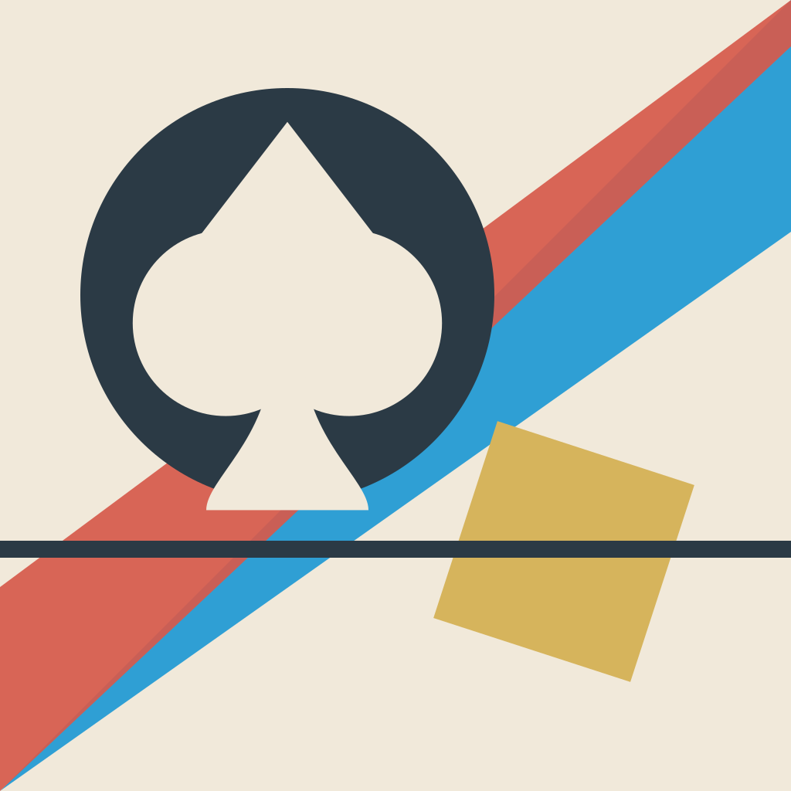

Each is a different artistic point of view, not a variation on one idea. All use the shipped palette from src/theme/theme.ts.
How to judge these. An app icon is seen at 60 px on a crowded home screen far more often than at 1024 px. Scroll to the size ladder under each one; that is the real test, and it separates these five more than the hero image does. Every icon is masked with the iOS squircle here so the crop is honest.

Swiss / International Typographic, Josef Müller-Brockmann
1 · Reduction
Everything that is not load-bearing is removed. The spade is constructed from primitives on a strict grid rather than drawn, and the only other elements are two structural bars. No gradient, no depth, no ornament; the confidence comes from the restraint.
Reads as a premium, serious card game. Closest in spirit to the dark matte table the app already uses.
flatgeometrichigh contrastbrand-aligned
Best small-size performance of the five. Still perfectly legible at 40 px. The risk is the opposite one: it may look austere next to colourful game icons.
Size ladder
180 · @3x
120 · @2x
87 · settings
60 · home
40 · spotlight
Light home screen
LocalPoker

Dark home screen
LocalPoker

Art Deco, A. M. Cassandre / Erté
2 · Casino heritage
Bilateral symmetry, a radiating fan and concentric metal rings, the visual language of 1920s posters and the Chrysler building, which is also the visual language of the casino itself. Gold on deep green, stepped bars closing the base.
The most "luxury" of the five, and the one that most says gambling room rather than card app.
symmetricalgold lineworkornamentalpremium
Weakest at small sizes, and that is disqualifying unless fixed. The rings and stepped bars turn to mush by 60 px and the rays disappear entirely. Deco depends on fine line, which is exactly what an app icon cannot afford. Would need a much heavier, simplified variant to ship.
Size ladder
180 · @3x
120 · @2x
87 · settings
60 · home
40 · spotlight
Contemporary iOS, Michael Flarup
3 · The object
One hero object, lit believably: a clay chip you could pick up, with a cast shadow grounding it, a specular arc across the top and a recessed felt centre. This is the dominant idiom on the App Store today because it works, a single recognisable object beats an abstract mark.
Instantly readable as poker, with no text and no cliché playing cards.
dimensionalgradientsingle objectstore-native
The safest choice and my recommendation. Strong circular silhouette holds to 40 px, the blue ground separates it from the sea of green poker icons, and it matches current store conventions without being generic.
Size ladder
180 · @3x
120 · @2x
87 · settings
60 · home
40 · spotlight

Character-led, Nintendo house style
4 · Poker with friends
The only direction whose subject is a person rather than a suit. The product is called "Poker with Friends" and is play-money; this is the one icon that communicates social and not real gambling before a single word is read. Uses the app's existing Pal avatar system.
Warm, approachable, and the clearest differentiator in a category that is almost uniformly dark green and gold.
characterfriendlyon-messagedifferentiated
Surprisingly robust small. The face carries it down to 40 px even as the cards shrink away. Trade-off: it reads casual/childlike, which undersells the serious bot AI underneath.
Size ladder
180 · @3x
120 · @2x
87 · settings
60 · home
40 · spotlight

Bauhaus / Constructivist, Herbert Bayer, El Lissitzky
5 · Flat primaries
A hard diagonal, blocks of unmodulated colour and the suit sitting in negative space inside a black disc. It refuses realism on purpose: on a home screen full of soft gradients, a cream ground and a red-and-blue diagonal is what catches the eye.
The only light-background option here, which alone makes it stand out among poker apps.
flatprimary colourasymmetriclight ground
Holds to 60 px, gets noisy at 40. The gold square and rule start competing with the disc. Boldest and most distinctive, but furthest from the app's actual dark, premium interior; the icon would be writing a cheque the UI doesn't cash.